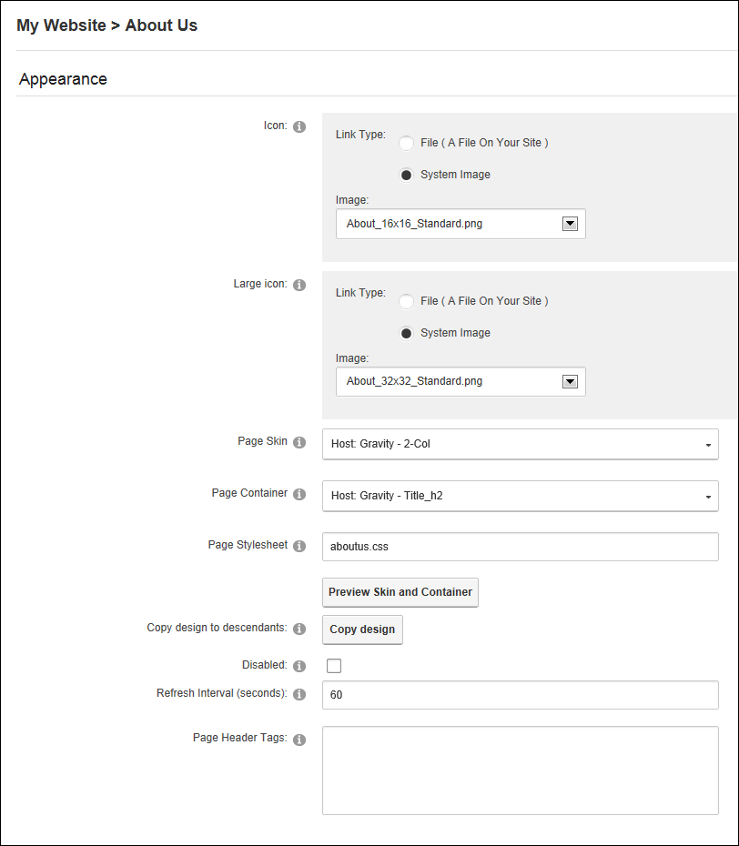

Advanced Settings for Existing Pages
How to set the advanced settings for existing pages on the Page Settings page (See "Editing Page Settings"). Note: All advanced page settings are optional.
- Navigate to the required page.
- Select Page Settings from the Edit Page menu on the ControlBar.
- Select the Advanced Settings tab.
- Expand the Appearance section.
- At Icon/Link Type, select the image to be displayed beside the page name in the menu. This image is also used as the Small Icon for any Console module relating to this page. Select the location of the required icon from these options:
- File (A File On Your Site ), set the file name to <None Specified> for no image - OR - Select an exist image -OR- Upload and select a new image (See "Uploading and Linking to a File").
- System Image: Select an image that is part of your DNN application and then select the required image.
- At Large Icon, using the same steps as for the above field. This sets the image that will be used for the Large Icon for any Console module relating to this page.
- At Page Skin, select a skin from the drop down list. The default option is < None Specified > which uses the default site skin. See "Setting the Default Site Skin and Container"
- At Page Container, select a container from the drop down list. The default option is < None Specified > which uses the default site container.
- In the Page Stylesheet text box, enter the name of the stylesheet to be used for this page only. Stylesheets must be uploaded to the site's Digital Asset Management module (Admin > File Management).
- At Copy Design to Descendants, click the Copy Design link. See "Copying Design to Child Pages". This setting is only available on existing pages for users who have Edit Page/Manage Settings permissions for child pages.
- At Disabled, select from these options:
- if the page name is not a link. I.e. When you click on the page name in the menu nothing happens. This option is typically selected for a parent page to provide a way for users to navigate to its child pages.
- for this page name to be a link to the page. This is the default option.
- In the Refresh Internal (seconds) text box, enter the interval to wait between automatic page refreshes. (E.g. Enter "60" for 1 minute or 60 seconds.) Leave field blank to disable.
- In the Page Header Tags text box, enter any tags (i.e. meta-tags) that should be rendered in the "HEAD" tag of the HTML for this page.

- Expand the Cache Settings section.
- At Output Cache Provider, select the provider to use for this page from these options:
- FileOutputCachingProvider: Choose this option to save cached items to a file system. This option is suitable for a shared hosting environment.
- DatabaseOutputCachingProvider: Choose this option to save cached items to the database.
- MemoryOutputCachingProvider: This is the fastest caching method. Select this option if you have web site has a large amount of RAM allocated. This is typically not suitable for a shared hosting environment.

- Expand the Other Settings section.
- At Secure?, to force this page to use a secure connection (SSL). This option will only be enabled if the host has enabled SSL (SuperUsers, See "Setting SSL Settings for a Single Site") - OR - remove use of SSL connection.
- At Allow Indexing, if the page should be indexed by search crawlers using the INDEX/NOINDEX values for ROBOTS meta tag - OR - to disable.
- In the Site Map Priority text box, enter the desired priority (between 0 and 1.0). This helps determine how this page is ranked in Google with respect to other pages on your site (0.5 is the default).
- At Start Date, click the Calendar
 button and select the first date the page is viewable.
button and select the first date the page is viewable. - At End Date, click the Calendar button and select the last date the page is viewable. Note: Expired pages can be viewed by Administrators via the Admin > Pages page. See "Viewing any Page (Pages Module)"
- At Link URL, to set this page to be a navigation link to another resource, select or add the link here. See "About the Link Control"
- Optional. At Permanently Redirect?, to redirect this URL to the Link URL as set in the previous field. This allows Search Engines to modify their URL's to directly link to the Link URL. Note: This setting is ignored if the Link Type is set to None.

- Click the Update Page button.